<meta charset="utf-8">
<meta name="viewport" content="width=device-width, initial-scale=1">
<title>Ironbark Advisory</title>
<link rel="icon" href="/favicon.svg" type="image/svg+xml">
<link rel="icon" href="/favicon.ico" sizes="32x32">
<link rel="apple-touch-icon" href="/apple-touch-icon.png">
<meta property="og:type" content="website">
<meta property="og:site_name" content="Ironbark Advisory">
<meta property="og:title" content="Ironbark Advisory">
<meta property="og:url" content="https://ironbarkadvisory.ae/">
<meta property="og:image" content="https://ironbarkadvisory.ae/og-image.png">
<meta property="og:image:width" content="1200">
<meta property="og:image:height" content="630">
<meta name="twitter:card" content="summary_large_image">
<link rel="preconnect" href="https://fonts.googleapis.com">
<link rel="preconnect" href="https://fonts.gstatic.com" crossorigin>
<link rel="stylesheet" href="https://fonts.googleapis.com/css2?family=Archivo:wdth,wght@62..125,100..900&family=IBM+Plex+Mono:wght@400;500&family=Inter:wght@300..700&display=swap">
<style>
/* ============================================================
   IRONBARK ADVISORY — home
   Archivo (two axis settings) + Inter + IBM Plex Mono.
   Photographs ACES-graded at build time.
   The page scrolls; two rails pin, and the Dubai plate is
   overtaken by the section that follows it.
   ============================================================ */
:root{
  --paper:#F6F1E9; --paper-2:#EDE6DA; --card:#FCFAF5;
  --deep:#0E2029; --on-deep:#F0EAE0; --on-deep-2:#A9BDC6;
  --ink:#16303D; --ink-2:#3B5666; --muted:#4B626F; --kick:#274054;
  --ocean:#0E5E7C; --sun:#8A5008; --gold:#E8A317;
  --rule:rgba(22,48,61,.16); --rule-2:rgba(22,48,61,.08);
  --f-display:"Archivo","Helvetica Neue",Arial,sans-serif;
  --f-body:"Inter",-apple-system,"Segoe UI",sans-serif;
  --f-mono:"IBM Plex Mono",ui-monospace,Menlo,monospace;
  --vs-head:"wdth" 116,"wght" 700;
  --vs-sub:"wdth" 100,"wght" 600;
  --gut:clamp(1.35rem,4.6vw,5rem); --stack:clamp(4rem,11vh,8rem);
  --ease:cubic-bezier(.22,.9,.3,1);
}
*,*::before,*::after{box-sizing:border-box}
html{-webkit-text-size-adjust:100%;overflow-x:clip;scroll-behavior:smooth}
body{margin:0;background:var(--paper);color:var(--ink);font-family:var(--f-body);
  font-size:clamp(1.16rem,1.25vw,1.28rem);line-height:1.68;overflow-x:clip}
p{margin:0}img{display:block;max-width:100%}
::selection{background:var(--ocean);color:var(--paper)}
:focus-visible{outline:2px solid var(--ocean);outline-offset:4px;border-radius:3px}
.wrap{width:100%;max-width:1500px;margin-inline:auto;padding-inline:var(--gut)}
.label{font-family:var(--f-mono);font-size:.82rem;text-transform:uppercase;letter-spacing:.18em;color:var(--kick);margin:0}
.label--m{color:var(--muted)}
.h-head{font-family:var(--f-display);font-variation-settings:var(--vs-head);font-weight:700;
  line-height:1.02;letter-spacing:-.02em;margin:0;text-wrap:balance}
.h-sub{font-family:var(--f-display);font-variation-settings:var(--vs-sub);font-weight:600;
  line-height:1.08;letter-spacing:-.014em;margin:0;text-wrap:balance}
h2.sec{font-size:clamp(1.55rem,3.1vw,2.6rem);margin-top:.55rem}
.lead{font-size:clamp(1.2rem,1.38vw,1.35rem);font-weight:400;color:var(--ink-2);line-height:1.55;max-width:52ch;margin:0}

.rev{display:block;overflow:hidden}
.rev>*{display:block;transform:translateY(108%);opacity:0;
  transition:transform 1.05s var(--ease) var(--d,0ms),opacity .8s ease var(--d,0ms)}
.in .rev>*,.rev.in>*{transform:none;opacity:1}
.fade{opacity:0;transform:translateY(18px);
  transition:opacity .9s ease var(--d,0ms),transform 1s var(--ease) var(--d,0ms)}
.in .fade,.fade.in{opacity:1;transform:none}

/* ---------- masthead ---------- */
.masthead{position:fixed;top:0;left:0;right:0;z-index:60;display:flex;align-items:center;justify-content:space-between;
  gap:1rem;padding:1.1rem var(--gut);border-bottom:0;
  background:rgba(246,241,233,.26);
  -webkit-backdrop-filter:blur(18px) saturate(135%);backdrop-filter:blur(18px) saturate(135%);
  transition:background .45s ease,padding .5s var(--ease),color .45s ease}
.masthead.docked{background:rgba(246,241,233,.42);padding-block:.68rem}
/* over the dark panels the glass and the type both invert, or the text disappears */
.masthead.on-dark{background:rgba(12,28,36,.40)}
.masthead.on-dark .brand{color:var(--on-deep)}
.masthead.on-dark .brand i{color:var(--on-deep-2)}
.masthead.on-dark .book{color:#20160A}
@supports not ((backdrop-filter:blur(1px)) or (-webkit-backdrop-filter:blur(1px))){
  /* no blur support: fall back to a more opaque bar so the text still holds */
  .masthead{background:rgba(246,241,233,.86)}
  .masthead.on-dark{background:rgba(12,28,36,.86)}
}
/* align-items:baseline, not center. The mark spans ascender to baseline, so
   its bottom edge belongs ON the text baseline - centring the boxes instead
   floats "Advisory" off the line "Ironbark" sits on. */
.brand{display:flex;align-items:baseline;gap:.62em;text-decoration:none;color:var(--ink);white-space:nowrap;font-size:1.18rem;transition:color .45s ease}
/* Side bearings belong to the glyph, not to the gap. A capital I carries a
   .097em left bearing (a lone stem needs the air); A carries .035em. Left
   uncorrected the flex gap puts each word further right than it looks. */
.brand b{margin-left:-.097em}
.brand i{margin-left:-.069em}
.brand i{transition:color .45s ease}
/* The mark's viewBox is cropped to its ink, so height set is height drawn.
   .724em is Archivo's ascender: the mark spans the top of the b and k down
   to the baseline, so nothing in the word crosses it. */
.brand svg{width:.724em;height:.724em;flex:0 0 auto}
.brand b{font-family:var(--f-display);font-variation-settings:"wdth" 125,"wght" 600;font-weight:600;font-size:1em;line-height:1;letter-spacing:-.004em}
/* .66rem is a floor, not a ratio - below ~10px the second word stops reading */
.brand i{font-style:normal;font-family:var(--f-display);font-variation-settings:"wdth" 125,"wght" 400;font-size:.66rem;letter-spacing:.2em;text-transform:uppercase;color:var(--ink-2)}
/* ---------- one button, used everywhere on the page ----------
   Gold is the brand accent and booking a call is the only conversion action,
   so every call to action carries the same pill. Hover fills it from the left
   in the gold's own dark shade and turns the label gold. */
.book,.card .btn,.cta{position:relative;isolation:isolate;overflow:hidden;white-space:nowrap;
  font-family:var(--f-mono);text-transform:uppercase;text-decoration:none;
  background:var(--gold);color:#20160A;border:0;border-radius:999px;
  /* UI feedback belongs under 300ms. These were 450-550ms, which reads as lag on
     the one control that converts. Press is faster still: slow where the user is
     deciding, fast where the system is responding. */
  transition:transform 200ms var(--ease),box-shadow 200ms var(--ease),color 160ms ease}
.book::after,.card .btn::after,.cta::after{content:"";position:absolute;inset:0;z-index:-1;
  background:#231A08;transform:scaleX(0);transform-origin:left center;
  transition:transform 260ms var(--ease)}
/* a button that does not acknowledge the press does not feel like it heard you */
.book:active,.card .btn:active,.cta:active{transform:scale(.97);transition-duration:120ms}
/* touch devices fire :hover on tap, so the lift must be gated behind a real pointer */
@media (hover:none){.book:hover,.card .btn:hover,.cta:hover{transform:none;box-shadow:none}}
.book:hover,.book:focus-visible,.card .btn:hover,.cta:hover,.cta:focus-visible,
.card:hover .btn,.card .btn:focus-visible{color:var(--gold);transform:translateY(-2px);
  box-shadow:0 14px 28px -16px rgba(35,26,8,.55)}
.book:hover::after,.book:focus-visible::after,.card .btn:hover::after,.cta:hover::after,
.cta:focus-visible::after,.card:hover .btn::after,.card .btn:focus-visible::after{transform:scaleX(1)}
.book{font-size:.80rem;letter-spacing:.14em;padding:.58rem 1rem}
.book-short{display:none}
@media (max-width:700px){.brand i{display:none}.book{font-size:.76rem;padding:.52rem .82rem;letter-spacing:.09em}
  /* the full label will not fit beside the menu button on a phone */
  .book-long{display:none}.book-short{display:inline}}

/* ---------- primary navigation ---------- */
.brand,.burger,.book{position:relative;z-index:2}
.mast-nav{display:flex;align-items:center;gap:clamp(1.1rem,2.3vw,2.1rem);margin-left:auto}
.nav{display:flex;align-items:center;gap:clamp(.95rem,1.85vw,1.75rem)}
.nav a{position:relative;font-family:var(--f-mono);font-size:clamp(.78rem,.82vw,.86rem);
  letter-spacing:.13em;text-transform:uppercase;text-decoration:none;color:var(--ink-2);
  white-space:nowrap;padding-block:.4rem;transition:color .35s ease}
/* the rule grows from the left rather than blinking on */
.nav a::after{content:"";position:absolute;left:0;right:0;bottom:.06rem;height:1px;background:currentColor;
  opacity:.5;transform:scaleX(0);transform-origin:left;transition:transform .5s var(--ease)}
.nav a:hover,.nav a:focus-visible{color:var(--ink)}
.nav a:hover::after,.nav a:focus-visible::after{transform:scaleX(1)}
.nav a[aria-current="page"]{color:var(--ink)}
.nav a[aria-current="page"]::after{transform:scaleX(1);opacity:.28}
.mast-act{display:flex;align-items:center;gap:.8rem}
.ln{display:grid;place-items:center;width:2rem;height:2rem;border-radius:999px;color:var(--ink-2);
  transition:color .35s ease,background .35s ease}
.ln svg{width:17px;height:17px;fill:currentColor}
.ln-word{display:none}
.ln:hover{color:var(--ink);background:rgba(22,48,61,.07)}

/* over the dark panels the links invert with the rest of the bar */
.masthead.on-dark .nav a{color:var(--on-deep-2)}
.masthead.on-dark .nav a:hover,.masthead.on-dark .nav a:focus-visible,
.masthead.on-dark .nav a[aria-current="page"]{color:var(--on-deep)}
.masthead.on-dark .ln{color:var(--on-deep-2)}
.masthead.on-dark .ln:hover{color:var(--on-deep);background:rgba(240,234,224,.12)}
.masthead.on-dark .burger .bar{background:var(--on-deep)}

.burger{display:none;width:2.4rem;height:2.4rem;padding:0;margin-left:auto;border:0;background:none;
  cursor:pointer;align-items:center;justify-content:center}
.burger .bar{position:absolute;left:.5rem;right:.5rem;height:1.5px;border-radius:2px;background:var(--ink);
  transition:transform .5s var(--ease),opacity .28s ease,background .45s ease}
.burger .bar:nth-child(1){transform:translateY(-.35rem)}
.burger .bar:nth-child(3){transform:translateY(.35rem)}
.burger[aria-expanded="true"] .bar:nth-child(1){transform:rotate(45deg)}
.burger[aria-expanded="true"] .bar:nth-child(2){opacity:0}
.burger[aria-expanded="true"] .bar:nth-child(3){transform:rotate(-45deg)}

/* ---------- below 1150 the links fold into a drawer ---------- */
@media (max-width:1150px){
  /* the drawer leaves the flow, so the pill and the menu button reorder around it */
  .burger{display:flex;order:3;margin-left:.55rem}
  .book{order:2;margin-left:auto}
  .mast-nav{position:fixed;top:0;left:0;right:0;z-index:1;margin:0;display:block;
    padding:clamp(5rem,13vh,6.2rem) var(--gut) clamp(2rem,6vh,3rem);
    max-height:100svh;overflow-y:auto;overscroll-behavior:contain;
    background:rgba(246,241,233,.94);border-bottom:1px solid var(--rule-2);
    -webkit-backdrop-filter:blur(22px) saturate(135%);backdrop-filter:blur(22px) saturate(135%);
    clip-path:inset(0 0 100% 0);opacity:0;visibility:hidden;
    transition:clip-path .62s var(--ease),opacity .3s ease,visibility 0s linear .62s}
  .masthead.nav-open .mast-nav{clip-path:inset(0 0 0 0);opacity:1;visibility:visible;
    transition:clip-path .62s var(--ease),opacity .3s ease,visibility 0s}
  .masthead.on-dark .mast-nav{background:rgba(12,28,36,.94);border-bottom-color:rgba(240,234,224,.14)}
  .nav{display:block}
  /* in the drawer they read as headings, not as labels */
  .nav a{display:block;font-family:var(--f-display);font-variation-settings:var(--vs-sub);font-weight:600;
    font-size:clamp(1.42rem,6.2vw,1.95rem);line-height:1.1;letter-spacing:-.014em;text-transform:none;
    color:var(--ink);padding-block:.6rem;border-bottom:1px solid var(--rule-2);
    opacity:0;transform:translateY(14px);
    transition:opacity .5s ease var(--d,0ms),transform .6s var(--ease) var(--d,0ms),color .35s ease}
  .masthead.nav-open .nav a{opacity:1;transform:none}
  .nav a::after{display:none}
  .nav a:nth-child(2){--d:60ms}.nav a:nth-child(3){--d:120ms}
  .nav a:nth-child(4){--d:180ms}.nav a:nth-child(5){--d:240ms}
  .masthead.on-dark .nav a{color:var(--on-deep);border-bottom-color:rgba(240,234,224,.14)}
  .mast-act{margin-top:clamp(1.4rem,4vh,2rem);
    opacity:0;transform:translateY(14px);
    transition:opacity .5s ease 300ms,transform .6s var(--ease) 300ms}
  .masthead.nav-open .mast-act{opacity:1;transform:none}
  .ln{display:inline-flex;align-items:center;gap:.7rem;width:auto;height:auto;padding:.5rem 0;border-radius:0}
  .ln:hover{background:none}
  .ln-word{display:inline;font-family:var(--f-mono);font-size:.80rem;letter-spacing:.15em;text-transform:uppercase}
  body.nav-lock{overflow:hidden}
}

/* ---------- hero: light type on dark water, no heavy scrim ---------- */
.hero{position:relative;min-height:100svh;display:flex;align-items:center;overflow:hidden;isolation:isolate;
  padding-top:clamp(5rem,12vh,7rem);
  /* the foot of the type has to clear the paper dissolve below it */
  padding-bottom:clamp(2.8rem,10vh,5.6rem)}
.hero-bg{position:absolute;inset:0;z-index:-2;overflow:hidden}
.vh{position:absolute;width:1px;height:1px;overflow:hidden;clip-path:inset(50%);white-space:nowrap}

/* Four frames, crossfading. Each carries its own paper wash, so the wash follows
   the picture instead of being one compromise stretched across all four. */
.slide{position:absolute;inset:0;opacity:0;transition:opacity 1.2s ease}
.slide.on{opacity:1}
.slide img{width:100%;height:100%;object-fit:cover;transform:scale(1.045);will-change:transform}
.slide.on img,.slide.out img{transform:scale(1.11) translate3d(-1.2%,0,0);transition:transform 11s linear}
.slide::after{content:"";position:absolute;inset:0;pointer-events:none;
  background:linear-gradient(to right,
    rgba(246,241,233,var(--a1)) 0%,rgba(246,241,233,var(--a2)) 34%,
    rgba(246,241,233,var(--a3)) 55%,rgba(246,241,233,0) 78%)}
.slide[data-wash="thin"]{--a1:.98;--a2:.90;--a3:.44}
.slide[data-wash="medium"]{--a1:1;--a2:.96;--a3:.58}
.slide[data-wash="deep"]{--a1:1;--a2:.99;--a3:.72}
/* the photograph dissolves into the page rather than butting against it */
.hero::after{content:"";position:absolute;inset:auto 0 0 0;height:clamp(80px,12svh,150px);
  z-index:-1;pointer-events:none;
  background:linear-gradient(to top,
    var(--paper) 0%, rgba(246,241,233,.88) 26%, rgba(246,241,233,.55) 52%,
    rgba(246,241,233,.22) 74%, rgba(246,241,233,0) 100%)}
.hero-inner{position:relative;width:100%;max-width:min(46%,40rem);margin-inline:0}
.hero .label{color:var(--kick)}
.hero h1{font-size:clamp(1.72rem,min(3.9vw,6.4vh),3.3rem);margin:.9rem 0 0;max-width:17ch;color:var(--ink)}
.hero .lead{color:var(--ink-2);margin-top:clamp(.9rem,2.2vh,1.5rem);max-width:38ch}
.hero-foot{display:flex;align-items:center;justify-content:space-between;gap:1.5rem;flex-wrap:wrap;
  margin-top:clamp(1.3rem,3.5vh,2.2rem);padding-top:1.05rem;border-top:1px solid var(--rule)}
.places{display:flex;align-items:center;gap:.7rem;font-family:var(--f-mono);font-size:.78rem;letter-spacing:.18em;text-transform:uppercase;color:var(--kick)}
.places i{display:block;width:clamp(28px,7vw,96px);height:1px;background:linear-gradient(90deg,var(--ocean),var(--gold))}
.cue{display:flex;align-items:center;gap:.55rem;font-family:var(--f-mono);font-size:.76rem;letter-spacing:.18em;text-transform:uppercase;color:var(--kick)}
.cue i{display:block;width:1px;height:30px;background:linear-gradient(var(--kick),transparent);animation:cue 2.4s var(--ease) infinite}
@keyframes cue{0%{transform:scaleY(0);transform-origin:50% 0}45%{transform:scaleY(1);transform-origin:50% 0}
 55%{transform:scaleY(1);transform-origin:50% 100%}100%{transform:scaleY(0);transform-origin:50% 100%}}
@media (max-width:860px){
  .hero{align-items:flex-start;padding-top:clamp(6rem,17vh,9rem)}
  .hero-inner{max-width:none;margin-inline:auto}
  /* keep the icon side of the frame in shot once the crop narrows */
  .slide img{object-position:70% center}
  .slide::after{background:linear-gradient(to bottom,
    rgba(246,241,233,var(--a1)) 0%,rgba(246,241,233,var(--a2)) 30%,
    rgba(246,241,233,var(--a3)) 50%,rgba(246,241,233,0) 82%)}
}
@media (max-width:700px){.cue{display:none}}

/* ---------- full-bleed photographic break ---------- */
.bleed{position:relative;height:min(86svh,760px);overflow:hidden;isolation:isolate;display:flex;align-items:flex-end}
.bleed-bg{position:absolute;inset:-10% 0 -10% 0;z-index:-2;overflow:hidden}
.bleed-bg img{width:100%;height:100%;object-fit:cover;will-change:transform}
.bleed::after{content:"";position:absolute;inset:0;z-index:-1;pointer-events:none;
  background:
    /* head: the paper carries down into the picture */
    linear-gradient(to bottom,var(--paper) 0%,rgba(246,241,233,.78) 20%,
      rgba(246,241,233,.36) 48%,rgba(246,241,233,0) 100%) top/100% 26% no-repeat,
    /* foot: unchanged, the copy sits on it */
    linear-gradient(to top,rgba(246,241,233,.92) 0%,rgba(246,241,233,.62) 34%,rgba(246,241,233,0) 68%)}
.bleed .inner{position:relative;width:100%;padding-bottom:clamp(1.8rem,5vh,3.2rem)}
.bleed p.big{font-size:clamp(1.32rem,2.7vw,2.25rem);margin:.7rem 0 0;max-width:18ch}

/* ---------- premise ---------- */
.premise{padding-block:var(--stack)}
.premise-head{max-width:34ch;margin-bottom:clamp(2rem,5vh,3.2rem)}
.claims{display:grid;grid-template-columns:repeat(auto-fit,minmax(250px,1fr));gap:clamp(1.2rem,3vw,2.6rem)}
.claim{padding-top:1.1rem;border-top:1px solid var(--rule)}
.claim h3{font-size:1.3rem;margin:.5rem 0 .55rem}
.claim p{color:var(--ink-2);font-weight:400;font-size:1.16rem}

/* ---------- "How can I help?" — three image cards ---------- */
.help{padding-block:var(--stack);background:var(--paper-2)}
.help-head{margin-bottom:clamp(1.8rem,5vh,3rem)}
.help-head .lead{margin-top:1rem;max-width:46ch}
.cards{display:grid;grid-template-columns:repeat(3,1fr);gap:clamp(1rem,1.8vw,1.5rem)}
.card{position:relative;isolation:isolate;overflow:hidden;border-radius:20px;background:#101c22;
  min-height:clamp(27rem,58vh,34rem);display:flex;flex-direction:column;justify-content:flex-end;
  padding:clamp(1.1rem,1.7vw,1.5rem);text-decoration:none;color:#F4F7F8;
  transition:transform .55s var(--ease),box-shadow .55s var(--ease)}
.card img{position:absolute;inset:0;width:100%;height:100%;object-fit:cover;z-index:-2;
  transition:transform 1s var(--ease)}
/* the copy sits in a darkened well at the foot of the picture */
.card::after{content:"";position:absolute;inset:0;z-index:-1;pointer-events:none;
  background:linear-gradient(to top,rgba(6,18,24,.94) 0%,rgba(6,18,24,.88) 24%,
    rgba(6,18,24,.70) 46%,rgba(6,18,24,.50) 62%,rgba(6,18,24,.14) 78%,rgba(6,18,24,0) 92%)}
.card:hover{transform:translateY(-4px);box-shadow:0 26px 54px -32px rgba(9,26,34,.7)}
.card:hover img{transform:scale(1.05)}
.card .eyebrow{font-family:var(--f-mono);font-size:.78rem;letter-spacing:.17em;text-transform:uppercase;color:#EEF6F9}
.card h3{font-size:clamp(1.35rem,2.1vw,1.75rem);margin:.55rem 0 .5rem;color:#FBFDFD}
.card p{font-size:1.1rem;line-height:1.54;color:#C6D6DD;margin:0 0 .95rem;max-width:32ch}
.chips{display:flex;flex-wrap:wrap;gap:.4rem;margin-bottom:1rem}
.chip{font-family:var(--f-mono);font-size:.78rem;letter-spacing:.09em;text-transform:uppercase;
  background:rgba(238,247,250,.16);border:1px solid rgba(238,247,250,.2);color:#E4EFF3;
  padding:.32rem .62rem;border-radius:999px;backdrop-filter:blur(6px)}
.card .btn{display:block;width:100%;text-align:center;font-size:.80rem;letter-spacing:.14em;padding:.92rem 1rem}
@media (max-width:1000px){.cards{grid-template-columns:1fr 1fr}}
@media (max-width:700px){.cards{grid-template-columns:1fr}.card{min-height:23rem}}

/* ---------- horizontal rails (destinations + pathway) ---------- */
.rail-sec{position:relative}
.rail-stage{position:sticky;top:0;height:100svh;display:flex;flex-direction:column;justify-content:center;overflow:hidden;padding-top:clamp(6.1rem,11vh,7.5rem)}
.rail-head{display:flex;align-items:baseline;justify-content:space-between;gap:1.4rem;flex-wrap:wrap;
  padding-inline:var(--gut);margin-bottom:clamp(1.1rem,3vh,2rem)}
.rail-vp{overflow:hidden}
.rail{display:flex;gap:clamp(.9rem,1.8vw,1.6rem);padding-inline:var(--gut);will-change:transform}
.rail-foot{padding-inline:var(--gut);margin-top:clamp(.9rem,2.5vh,1.6rem);display:flex;align-items:center;gap:1rem}
.rail-bar{flex:1;height:2px;background:var(--rule-2);position:relative;max-width:16rem;border-radius:2px;overflow:hidden}
.rail-bar i{position:absolute;inset:0 auto 0 0;background:var(--ocean);border-radius:2px}

/* destinations */
.dest{background:var(--paper)}
.city{flex:0 0 auto;width:clamp(255px,26vw,370px);background:var(--card);border:1px solid var(--rule-2);
  border-radius:12px;overflow:hidden;display:flex;flex-direction:column;
  transition:border-color .45s ease,box-shadow .55s var(--ease)}
.city.near{border-color:var(--ocean);box-shadow:0 16px 40px -30px rgba(14,94,124,.75)}
.city-img{aspect-ratio:3/2;overflow:hidden;background:#dcd6c9}
.city-img.is-placeholder{display:flex;align-items:center;justify-content:center;
  background:repeating-linear-gradient(135deg,var(--paper-2) 0 10px,#E5DCCB 10px 20px);
  border-bottom:1px solid var(--rule-2)}
.city-img.is-placeholder span{font-family:var(--f-mono);font-size:.76rem;letter-spacing:.16em;
  text-transform:uppercase;color:var(--muted);background:var(--paper);padding:.4rem .7rem;border-radius:999px}
.city-img img{width:100%;height:100%;object-fit:cover}
.city-body{padding:clamp(1rem,1.7vw,1.35rem);display:grid;gap:.5rem;flex:1;align-content:start}
.city-top{display:flex;align-items:baseline;justify-content:space-between;gap:.8rem}
.city .state{font-family:var(--f-mono);font-size:.78rem;letter-spacing:.15em;text-transform:uppercase;color:var(--ocean)}
.city .code{font-family:var(--f-mono);font-size:.79rem;letter-spacing:.12em;color:var(--muted)}
.city h3{font-size:1.5rem}
.city p{font-size:1.11rem;color:var(--ink-2);font-weight:400}
.city .fit{font-family:var(--f-mono);font-size:.78rem;letter-spacing:.08em;text-transform:uppercase;color:var(--sun);
  display:flex;gap:.5rem;align-items:flex-start;margin-top:.15rem}
.city .fit::before{content:"";flex:0 0 auto;width:5px;height:5px;margin-top:.4rem;background:var(--gold);border-radius:50%}
.unis{display:flex;flex-wrap:wrap;gap:.3rem;padding-top:.7rem;margin-top:.15rem;border-top:1px solid var(--rule-2)}
.uni{font-family:var(--f-mono);font-size:.76rem;letter-spacing:.06em;text-transform:uppercase;color:var(--ink-2);
  border:1px solid var(--rule-2);border-radius:999px;padding:.2rem .48rem}

/* ---------- the Dubai plate, overtaken by what follows ---------- */
:root{--dxb-h:235svh;--dxb-lift:100svh}
.dxb{position:relative;height:var(--dxb-h)}
.dxb::before{content:"";position:absolute;top:0;left:0;right:0;height:26svh;z-index:1;pointer-events:none;
  background:linear-gradient(to bottom,var(--paper) 0%,rgba(246,241,233,.80) 22%,
    rgba(246,241,233,.38) 52%,rgba(246,241,233,0) 100%)}
.dxb-plate{position:sticky;top:0;height:100svh;overflow:hidden;z-index:0}
.dxb-plate img{width:100%;height:100%;object-fit:cover;transform:none}
.dxb-plate::after{content:"";position:absolute;inset:0;
  background:linear-gradient(to bottom,rgba(8,26,34,.28) 0%,rgba(8,26,34,0) 34%)}

/* ---------- the student pathway rail ---------- */
.path{position:relative;z-index:2;background:var(--paper);border-radius:26px 26px 0 0;
  box-shadow:0 -34px 70px -32px rgba(9,26,34,.5);margin-top:calc(var(--dxb-lift) * -1)}
.stage{flex:0 0 auto;width:clamp(290px,32vw,460px);background:var(--card);border:1px solid var(--rule-2);
  border-radius:14px;padding:clamp(1.3rem,2.2vw,2rem);display:flex;flex-direction:column;gap:.75rem;
  min-height:clamp(21rem,50vh,27rem);transition:border-color .45s ease,box-shadow .55s var(--ease)}
.stage.near{border-color:var(--ocean);box-shadow:0 18px 44px -32px rgba(14,94,124,.8)}
.stage .n{font-family:var(--f-display);font-variation-settings:"wdth" 88,"wght" 700;
  font-size:clamp(2.6rem,4.6vw,3.9rem);line-height:.82;color:var(--rule);transition:color .45s ease;letter-spacing:-.03em}
.stage.near .n{color:var(--ocean)}
.stage .when{font-family:var(--f-mono);font-size:.78rem;letter-spacing:.15em;text-transform:uppercase;color:var(--sun)}
.stage h3{font-size:clamp(1.25rem,1.9vw,1.6rem)}
.stage p{font-size:1.14rem;color:var(--ink-2);flex:1}
.stage ul{list-style:none;margin:0;padding:.9rem 0 0;border-top:1px solid var(--rule-2);display:grid;gap:.38rem}
.stage li{font-family:var(--f-mono);font-size:.78rem;letter-spacing:.08em;text-transform:uppercase;color:var(--ink-2);
  display:flex;gap:.55rem}
.stage li::before{content:"";flex:0 0 auto;width:5px;height:5px;margin-top:.4rem;background:var(--ocean);border-radius:50%}

@media (min-width:901px) and (max-height:820px){
  /* the pinned stage loses ~78px to the header; claw it back from the cards */
  .rail-head{margin-bottom:clamp(.6rem,1.6vh,1.1rem)}
  .city,.stage{min-height:0}
  .stage{padding:clamp(1rem,1.8vw,1.5rem)}
  .city-img{aspect-ratio:16/10}
}
@media (max-width:900px){
  .rail-stage{position:relative;height:auto;padding-block:var(--stack)}
  .rail-vp{overflow-x:auto;scroll-snap-type:x mandatory;-webkit-overflow-scrolling:touch}
  .rail{transform:none!important;padding-bottom:1rem}
  .city,.stage{scroll-snap-align:center}
  .city{width:min(78vw,320px)} .stage{width:min(84vw,340px)}
  .rail-foot{display:none}
  :root{--dxb-h:215svh;--dxb-lift:105svh}
  .path{border-radius:20px 20px 0 0}
}

/* ---------- founder ---------- */
.founder{padding-block:var(--stack)}
.founder-grid{display:grid;grid-template-columns:minmax(0,.85fr) minmax(0,1.15fr);gap:clamp(1.8rem,5vw,5rem);align-items:center}
.portrait{position:relative;border-radius:12px;overflow:hidden;max-width:24rem;margin:0;border:1px solid var(--rule-2)}
.portrait img{width:100%;height:auto}
.portrait figcaption{position:absolute;left:0;right:0;bottom:0;padding:1.5rem 1.1rem .9rem;
  background:linear-gradient(to top,rgba(246,241,233,.98) 0%,rgba(246,241,233,.93) 58%,rgba(246,241,233,0) 100%);
  font-family:var(--f-mono);font-size:.74rem;letter-spacing:.13em;text-transform:uppercase;color:var(--ink-2)}
.who-name{font-family:var(--f-display);font-variation-settings:var(--vs-head);font-weight:700;
  font-size:clamp(1.5rem,2.4vw,2rem);letter-spacing:-.02em;line-height:1.05;margin:.5rem 0 .2rem}
.who-role{font-family:var(--f-mono);font-size:.80rem;letter-spacing:.16em;text-transform:uppercase;color:var(--ocean);margin-bottom:1.15rem}
.founder h3{font-size:clamp(1.24rem,2.3vw,1.8rem);max-width:none;margin-bottom:.4rem;text-wrap:pretty}
.creds{margin-top:1.6rem}
.cred{display:grid;grid-template-columns:9.4rem 1fr;gap:1rem;padding:.72rem 0;border-top:1px solid var(--rule-2);
  font-size:1.13rem;color:var(--ink-2);font-weight:400}
.cred dt{font-family:var(--f-mono);font-size:.78rem;letter-spacing:.13em;text-transform:uppercase;color:var(--muted);margin:0;padding-top:.22rem}
.cred dd{margin:0}
@media (max-width:860px){.founder-grid{grid-template-columns:1fr;gap:2.2rem}.portrait{max-width:17rem}.cred{grid-template-columns:1fr;gap:.1rem}}

/* ---------- close ---------- */
.close{position:relative;overflow:hidden;isolation:isolate;background:var(--deep);color:var(--on-deep);
  min-height:min(92svh,820px);display:flex;align-items:center;padding-block:var(--stack)}
.close img{position:absolute;inset:0;width:100%;height:100%;object-fit:cover;z-index:-2;opacity:.5}
.close::after{content:"";position:absolute;inset:0;z-index:-1;
  background:linear-gradient(to right,rgba(14,32,41,.94) 0%,rgba(14,32,41,.8) 48%,rgba(14,32,41,.6) 100%)}
.close .label{color:var(--gold)}
.close h2{font-size:clamp(1.72rem,3.6vw,3rem);margin:.7rem 0 0;max-width:15ch;color:var(--on-deep)}
.close p.lead{color:var(--on-deep-2);margin-top:1.1rem;max-width:48ch}
.close-row{display:flex;flex-wrap:wrap;gap:.9rem 1.5rem;align-items:center;margin-top:clamp(1.6rem,4vh,2.4rem)}
.cta{display:inline-flex;align-items:center;gap:.8rem;font-size:.84rem;letter-spacing:.16em;padding:1rem 1.6rem}
.alt{font-family:var(--f-mono);font-size:.80rem;letter-spacing:.14em;text-transform:uppercase;color:var(--on-deep-2);
  text-decoration:none;border-bottom:1px solid rgba(240,234,224,.35);padding-bottom:.18rem;transition:color .35s ease,border-color .35s ease}
.alt:hover{color:var(--gold);border-color:var(--gold)}

footer{background:var(--deep);color:var(--on-deep-2);padding-block:clamp(2.2rem,6vh,3.5rem);border-top:1px solid rgba(240,234,224,.12)}
.foot{display:grid;grid-template-columns:minmax(0,1.1fr) minmax(0,1fr);gap:clamp(2rem,6vw,5rem);align-items:start}
.foot-brand .brand{color:var(--on-deep)}
.foot-brand .brand i{color:var(--on-deep-2)}
.foot-brand p{margin-top:1.05rem;max-width:32ch;color:var(--on-deep-2);font-size:1.06rem}
.foot-cols{display:grid;grid-template-columns:repeat(auto-fit,minmax(150px,1fr));gap:1.8rem}
/* hello@ironbarkadvisory.ae is a single unbreakable 210px token. Two columns
   need ~492px of viewport to hold it; below that the address was clipped by the
   page's overflow-x:clip, so it silently lost its last characters on a phone. */
@media (max-width:520px){.foot-cols{grid-template-columns:1fr}}
.foot ul{overflow-wrap:break-word}
@media (max-width:760px){.foot{grid-template-columns:1fr;gap:2.2rem}}
.foot h5{font-family:var(--f-mono);font-size:.78rem;letter-spacing:.16em;text-transform:uppercase;color:#8CA3AD;margin:0 0 .75rem;font-weight:400}
.foot ul{list-style:none;margin:0;padding:0;display:grid;gap:.45rem;font-size:1.1rem;font-weight:400}
.foot a{color:var(--on-deep-2);text-decoration:none;transition:color .3s ease}
.foot a:hover{color:var(--gold)}
.colophon{margin-top:2.2rem;padding-top:1rem;border-top:1px solid rgba(240,234,224,.12);display:flex;flex-wrap:wrap;
  gap:.6rem 1.8rem;justify-content:space-between;font-family:var(--f-mono);font-size:.74rem;letter-spacing:.11em;
  text-transform:uppercase;color:#8CA3AD}

@media (prefers-reduced-motion:reduce){
  *,*::before,*::after{animation-duration:.001ms!important;transition-duration:.001ms!important;scroll-behavior:auto!important}
  .rev>*{transform:none;opacity:1}.fade{opacity:1;transform:none}
  .rail-stage{position:relative;height:auto;padding-block:var(--stack)}
  .rail{transform:none!important}.rail-vp{overflow-x:auto}.rail-foot{display:none}
  .hero-bg,.bleed-bg{inset:0}
  .slide.on img,.slide.out img{transform:none;transition:none}
  .dxb{height:auto}.dxb-plate{position:relative;height:62svh}.path{margin-top:0}
}
</style>
<noscript><style>.rev>*{transform:none;opacity:1}.fade{opacity:1;transform:none}
 .rail-stage{position:relative;height:auto;padding-block:var(--stack)}
 .rail{transform:none!important}.rail-vp{overflow-x:auto}.rail-foot{display:none}
 .dxb{height:auto}.dxb-plate{position:relative;height:62svh}.path{margin-top:0}</style></noscript>

<header class="masthead" id="masthead">
  <a class="brand" href="#top">
    <svg viewBox="8.1 8.1 31.8 31.8" fill="none" aria-hidden="true">
      <g stroke="currentColor" stroke-width="3.8" stroke-linecap="round">
        <path d="M10 17.9V38"/><path d="M17 12.9V38"/><path d="M31 14.4V38"/><path d="M38 19.3V38"/>
      </g>
      <path d="M24 10V38" stroke="#E8A317" stroke-width="3.8" stroke-linecap="round"/>
    </svg><b>Ironbark</b><i>Advisory</i>
  </a>
  <button class="burger" id="burger" type="button" aria-label="Menu" aria-expanded="false" aria-controls="mast-nav">
    <span class="bar"></span><span class="bar"></span><span class="bar"></span>
  </button>
  <div class="mast-nav" id="mast-nav">
    <nav class="nav" aria-label="Primary">
      <a href="about.html">About</a>
      <a href="why-australia.html">Why Australia</a>
      <a href="students-families.html">Students &amp; families</a>
      <a href="institutions.html">Institutions</a>
      <a href="insights.html">News</a>
    </nav>
    <div class="mast-act">
      <a class="ln" href="https://www.linkedin.com/in/aqeebakram" target="_blank" rel="noopener" aria-label="LinkedIn">
        <svg viewBox="0 0 24 24" aria-hidden="true"><path d="M19 3a2 2 0 0 1 2 2v14a2 2 0 0 1-2 2H5a2 2 0 0 1-2-2V5a2 2 0 0 1 2-2h14m-.5 15.5v-5.3a3.26 3.26 0 0 0-3.26-3.26c-.85 0-1.84.52-2.28 1.3v-1.11h-2.79v8.37h2.79v-4.93c0-.77.62-1.4 1.39-1.4a1.4 1.4 0 0 1 1.4 1.4v4.93h2.75M6.88 8.56a1.68 1.68 0 0 0 1.68-1.68c0-.93-.75-1.69-1.68-1.69a1.69 1.69 0 0 0-1.69 1.69c0 .93.76 1.68 1.69 1.68m1.39 9.94v-8.37H5.5v8.37h2.77z"/></svg>
        <span class="ln-word">LinkedIn</span>
      </a>
    </div>
  </div>
  <a class="book" href="https://calendar.app.google/Wr325oNEYvxfeW6F9" target="_blank" rel="noopener">
    <span class="book-long">Book a discovery call</span><span class="book-short">Book a call</span>
  </a>
</header>

<main id="top">

<!-- ══ HERO ══ -->
<section class="hero" id="hero">
  <div class="hero-bg" aria-hidden="true">
    <div class="slide on" data-wash="deep">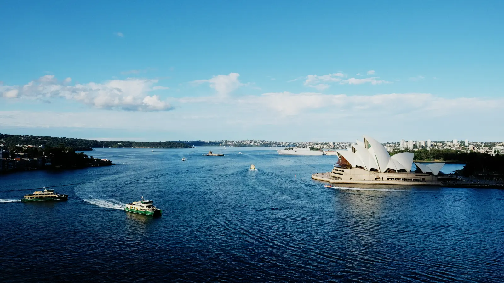</div>
    <div class="slide" data-wash="medium">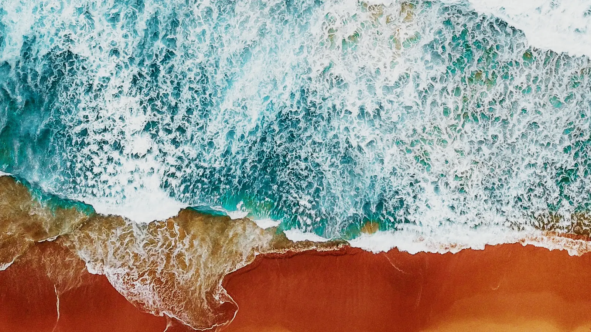</div>
    <div class="slide" data-wash="medium">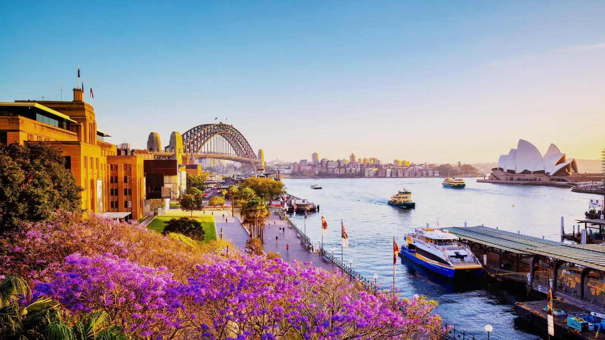</div>
    <div class="slide" data-wash="thin">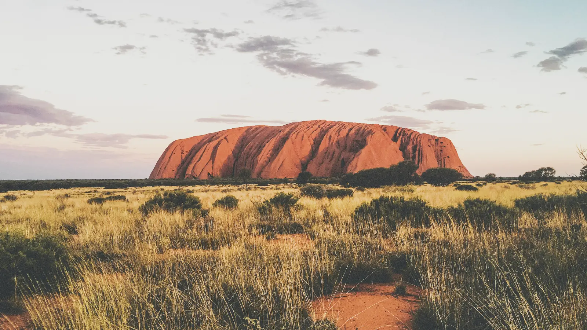</div>
    <div class="slide" data-wash="deep" data-top="dark"></div>
  </div>
  <p class="vh">Sydney Harbour with the Opera House, surf on an Australian beach from above, Circular Quay at sunset, Uluru at dawn, and the coast road above the Tasman Sea.</p>
  <div class="wrap hero-inner">
    <p class="label">Independent Education Advisory &middot; Dubai, United Arab Emirates</p>
    <h1 class="h-head">Education advice from someone who has sat on every side of the table.</h1>
    <p class="lead">I help families find the right Australian pathway for their child, and I provide strategic advice to education providers and stakeholders across K12 and higher education.</p>
    <div class="hero-foot">
      <p class="places">Australia<i></i>Dubai</p>
      <p class="cue"><i></i>Scroll</p>
    </div>
  </div>
</section>

<!-- ══ PREMISE ══ -->
<section class="premise wrap" id="why">
  <div class="premise-head">
    <p class="label">Why independent</p>
    <h2 class="h-head sec"><span class="rev"><span>Most agents are paid by the</span></span><span class="rev"><span style="--d:110ms">university you end up at.</span></span></h2>
  </div>
  <div class="claims">
    <article class="claim fade"><p class="label label--m">i</p><h3 class="h-sub">No commissions, ever</h3>
      <p>No provider pays me to place your child anywhere. You pay me, which means the advice answers to you and to nobody else.</p></article>
    <article class="claim fade" style="--d:110ms"><p class="label label--m">ii</p><h3 class="h-sub">Full cost and return clarity</h3>
      <p>Total cost to graduation modelled against realistic post-study outcomes &mdash; before a deposit is paid, not after.</p></article>
    <article class="claim fade" style="--d:220ms"><p class="label label--m">iii</p><h3 class="h-sub">Lived experience</h3>
      <p>I have worked in international education since 2014, arrived in Australia as a student in 2016, and have stayed inside the sector ever since &mdash; universities, government, and now here.</p></article>
  </div>
</section>

<!-- ══ BREAK · AUSTRALIA ══ -->
<section class="bleed" id="break-au">
  <div class="bleed-bg">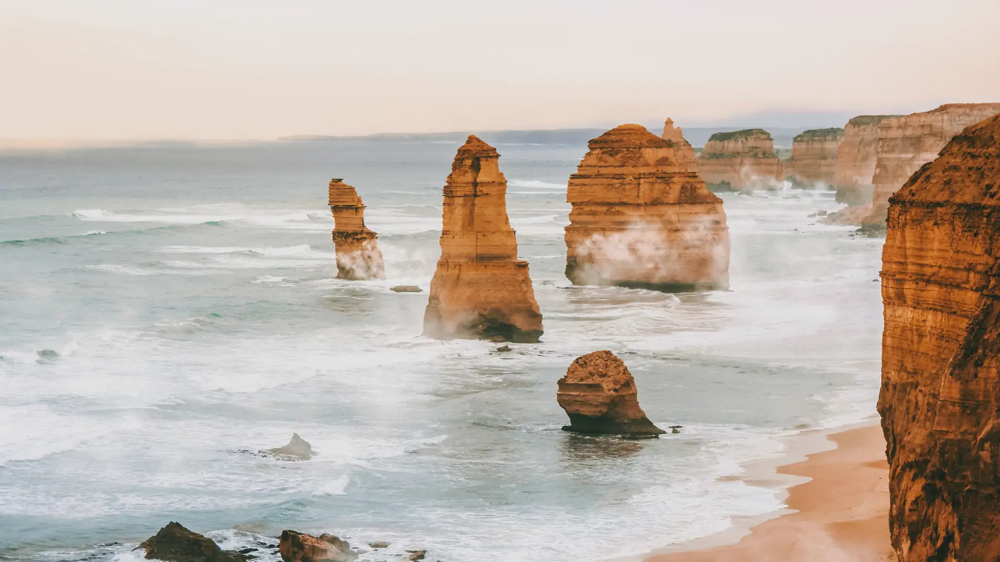</div>
  <div class="wrap inner">
    <p class="label">The destination</p>
    <p class="big h-head fade">Eleven thousand kilometres from the campus gates.</p>
  </div>
</section>

<!-- ══ GET STARTED · three cards ══ -->
<section class="help" id="help">
  <div class="wrap">
    <div class="help-head">
      <p class="label">Get started</p>
      <h2 class="h-head sec">How can I help?</h2>
      <p class="lead">Three ways in, depending on whether you are choosing a country, entering a market, or opening a door for your students.</p>
    </div>
    <div class="cards">
      <a class="card fade" href="students-families.html">
        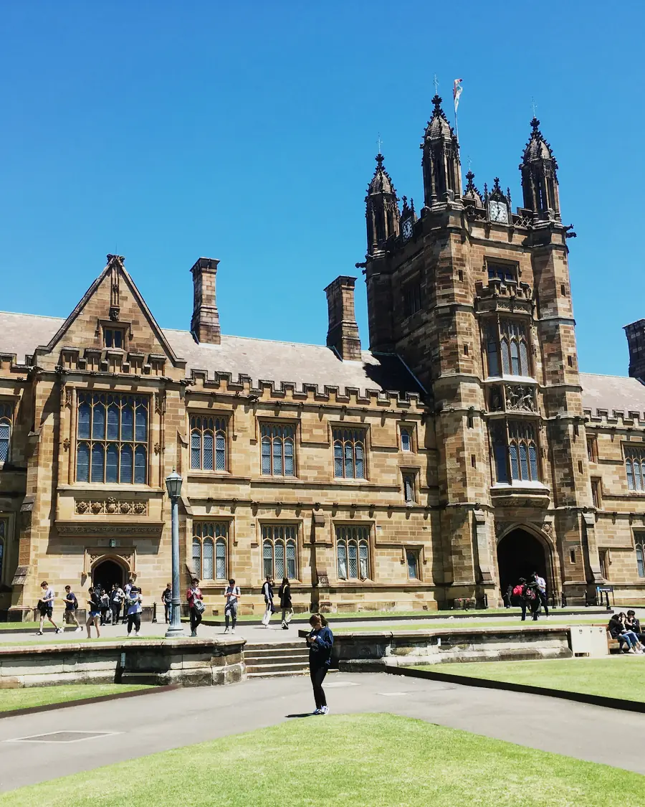
        <p class="eyebrow">For students &amp; families</p>
        <h3 class="h-sub">Choosing Australia</h3>
        <p>Unbiased advice on universities, courses, cities and the real total cost &mdash; from someone who arrived as an international student and never left the sector.</p>
        <div class="chips"><span class="chip">No commissions</span><span class="chip">Five stages</span></div>
        <span class="btn">Explore the pathway</span>
      </a>
      <a class="card fade" style="--d:110ms" href="institutions.html">
        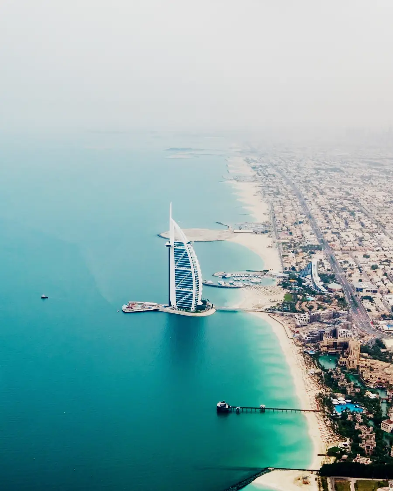
        <p class="eyebrow">For institutions &amp; providers</p>
        <h3 class="h-sub">Building in the UAE</h3>
        <p>Market entry, transnational education and branch-campus feasibility, partnership brokering and regulatory navigation.</p>
        <div class="chips"><span class="chip">TNE &amp; branch campus</span><span class="chip">Market entry</span></div>
        <span class="btn">Explore partnerships</span>
      </a>
      <a class="card fade" style="--d:220ms" href="institutions.html">
        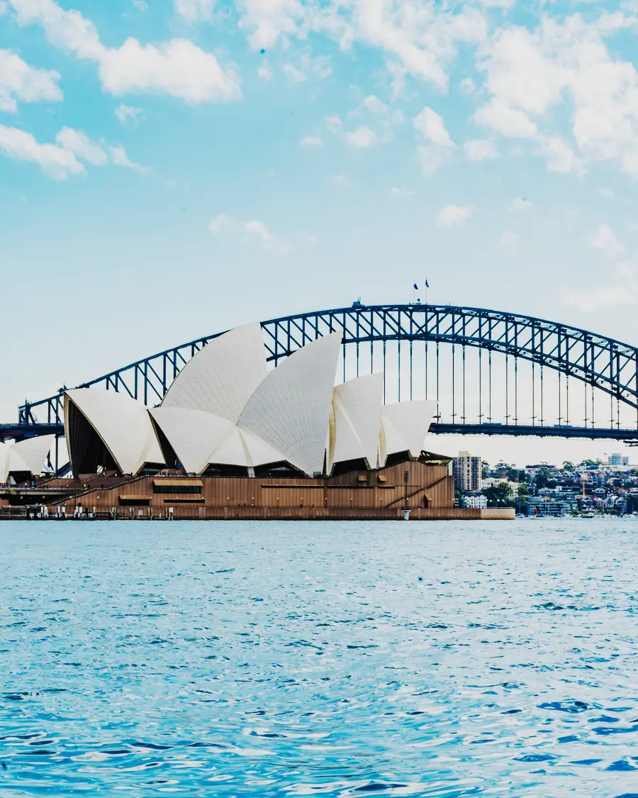
        <p class="eyebrow">For local schools</p>
        <h3 class="h-sub">Learn about Australia</h3>
        <p>Immersion programmes, articulation and pathway agreements, and partner matching for UAE schools looking outward.</p>
        <div class="chips"><span class="chip">Immersion</span><span class="chip">Partnerships</span></div>
        <span class="btn">Explore programmes</span>
      </a>
    </div>
  </div>
</section>

<!-- ══ DESTINATIONS RAIL ══ -->
<section class="rail-sec dest" id="destinations">
  <div class="rail-stage">
    <div class="rail-head">
      <div><p class="label">Study destinations</p><h2 class="h-head sec">Seven cities with a strong focus on education and graduate outcomes.</h2></div>
      <p class="label label--m">West to east &mdash; Perth is the closest Australian capital to the UAE</p>
    </div>
    <div class="rail-vp" data-vp="dest"><div class="rail" data-rail="dest">
      <article class="city"><div class="city-img">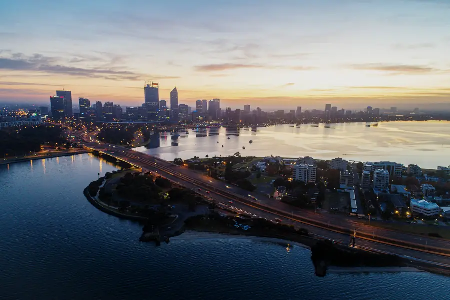</div><div class="city-body">
        <div class="city-top"><span class="state">Western Australia</span><span class="code">WA</span></div><h3 class="h-sub">Perth</h3>
        <p>The closest capital to home, on the Indian Ocean and only a few hours off Gulf time. Beaches on the doorstep and a smaller student population.</p>
        <p class="fit">Engineering, mining and energy &mdash; and the shortest flight</p>
        <div class="unis"><span class="uni">UWA</span><span class="uni">Curtin</span><span class="uni">Murdoch</span><span class="uni">ECU</span></div></div></article>
      <article class="city"><div class="city-img">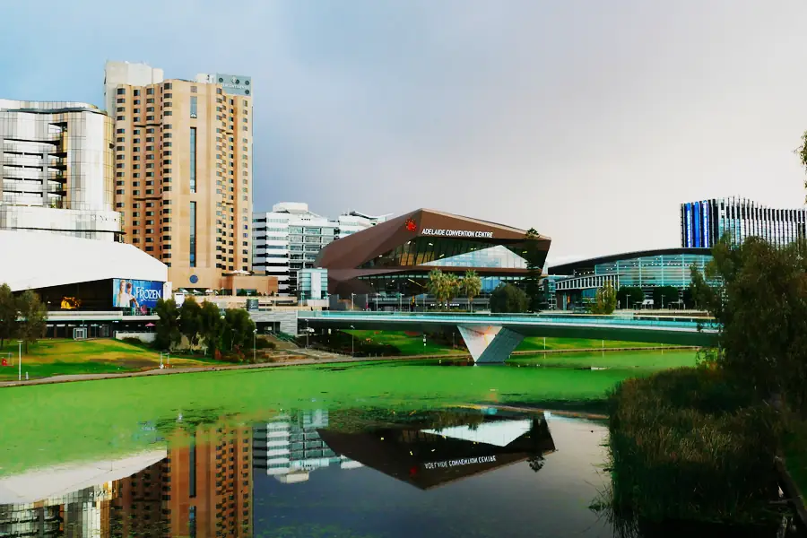</div><div class="city-body">
        <div class="city-top"><span class="state">South Australia</span><span class="code">SA</span></div><h3 class="h-sub">Adelaide</h3>
        <p>Compact, walkable and noticeably cheaper to live in than Sydney or Melbourne. Wine country half an hour out, serious health and defence research in town.</p>
        <p class="fit">Tighter budgets, health sciences, defence engineering</p>
        <div class="unis"><span class="uni">Adelaide</span><span class="uni">UniSA</span><span class="uni">Flinders</span></div></div></article>
      <article class="city"><div class="city-img">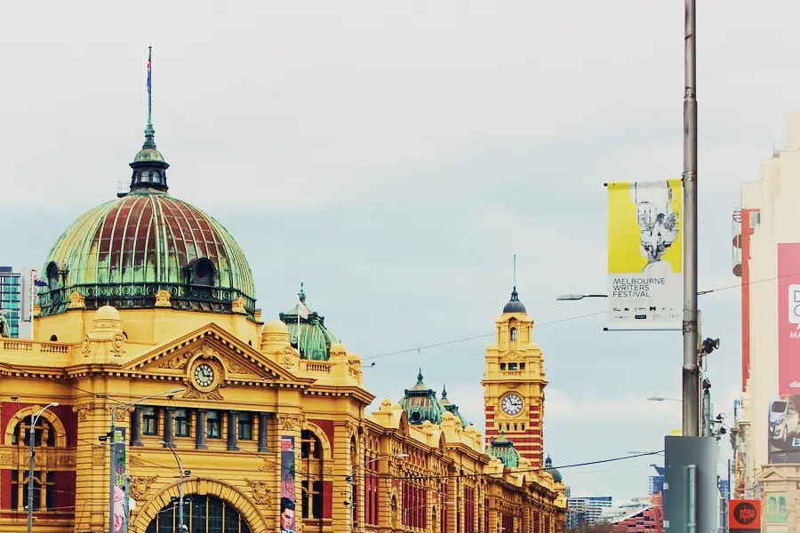</div><div class="city-body">
        <div class="city-top"><span class="state">Victoria</span><span class="code">VIC</span></div><h3 class="h-sub">Melbourne</h3>
        <p>The country&rsquo;s cultural engine &mdash; design, food, sport, and the densest concentration of research universities. Cold grey winters some students love and others really do not.</p>
        <p class="fit">Research depth, design, arts and business</p>
        <div class="unis"><span class="uni">Melbourne</span><span class="uni">Monash</span><span class="uni">RMIT</span><span class="uni">Deakin</span></div></div></article>
      <article class="city"><div class="city-img">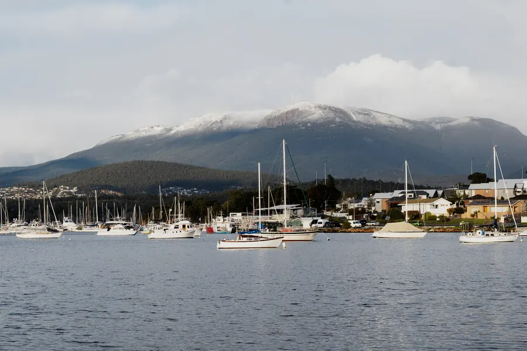</div><div class="city-body">
        <div class="city-top"><span class="state">Tasmania</span><span class="code">TAS</span></div><h3 class="h-sub">Hobart</h3>
        <p>The smallest and coolest of the capitals, on a deep-water harbour under a mountain. Cheapest of the seven to live in, and the base for Australia&rsquo;s Antarctic and marine science.</p>
        <p class="fit">Marine and Antarctic science, and the lowest cost base</p>
        <div class="unis"><span class="uni">UTAS</span></div></div></article>
      <article class="city"><div class="city-img"></div><div class="city-body">
        <div class="city-top"><span class="state">Aust. Capital Territory</span><span class="code">ACT</span></div><h3 class="h-sub">Canberra</h3>
        <p>Small, quiet and built on purpose around government. If the plan involves policy or diplomacy, the people who do that work live in the same suburbs.</p>
        <p class="fit">Policy, international relations, public administration</p>
        <div class="unis"><span class="uni">ANU</span><span class="uni">Canberra</span></div></div></article>
      <article class="city"><div class="city-img">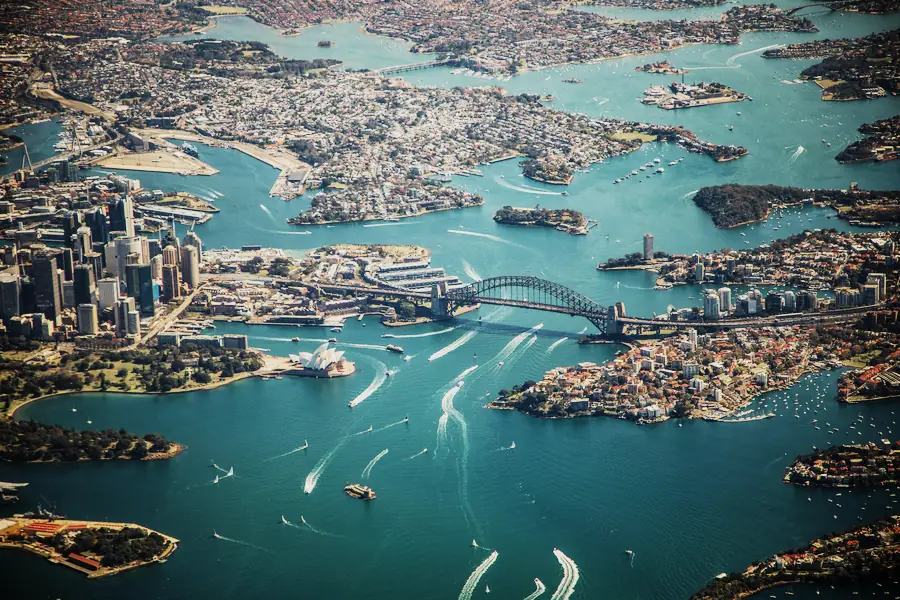</div><div class="city-body">
        <div class="city-top"><span class="state">New South Wales</span><span class="code">NSW</span></div><h3 class="h-sub">Sydney</h3>
        <p>The biggest city and the biggest graduate job market, wrapped around a harbour and thirty-odd beaches. Also the most expensive place in the country to rent.</p>
        <p class="fit">Finance, law, and the largest job market</p>
        <div class="unis"><span class="uni">UNSW</span><span class="uni">Sydney</span><span class="uni">UTS</span><span class="uni">Macquarie</span></div></div></article>
      <article class="city"><div class="city-img">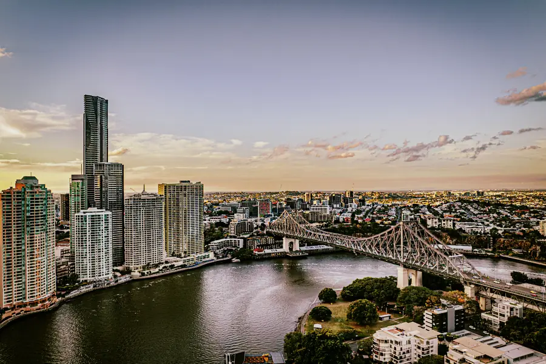</div><div class="city-body">
        <div class="city-top"><span class="state">Queensland</span><span class="code">QLD</span></div><h3 class="h-sub">Brisbane</h3>
        <p>Subtropical and warm almost year round, cheaper than the southern capitals, and building fast ahead of the 2032 Games. The Gold Coast is an hour south.</p>
        <p class="fit">Warm climate, sport science, a lower cost base</p>
        <div class="unis"><span class="uni">UQ</span><span class="uni">QUT</span><span class="uni">Griffith</span></div></div></article>
    </div></div>
    <div class="rail-foot"><p class="label label--m" style="margin:0">Scroll</p>
      <span class="rail-bar"><i data-bar="dest" style="width:14.28%"></i></span>
      <p class="label label--m" data-name="dest" style="margin:0">Perth</p></div>
  </div>
</section>

<!-- ══ DUBAI PLATE — no text; the pathway rides up over it ══ -->
<section class="dxb" id="dxb" aria-hidden="true">
  <div class="dxb-plate">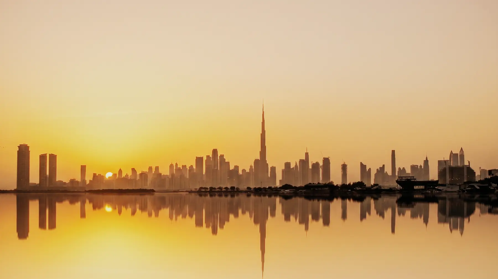</div>
</section>

<!-- ══ THE STUDENT PATHWAY — rides up over Dubai, then runs sideways ══ -->
<section class="rail-sec path" id="pathway">
  <div class="rail-stage">
    <div class="rail-head">
      <div><p class="label">The student pathway</p><h2 class="h-head sec">Five stages. The first one is free.</h2></div>
      <p class="label label--m">Year-round &mdash; most families start twelve to eighteen months out</p>
    </div>
    <div class="rail-vp" data-vp="path"><div class="rail" data-rail="path">
      <article class="stage">
        <span class="n">01</span><p class="when">Thirty minutes &middot; no charge</p>
        <h3 class="h-sub">Discovery call</h3>
        <p>We work out whether Australia is even the right answer, and whether I am the right person to help. No obligation to continue, and no pitch.</p>
        <ul><li>Where the family is now</li><li>What the budget really is</li><li>Whether I can add anything</li></ul>
      </article>
      <article class="stage">
        <span class="n">02</span><p class="when">Week one to two</p>
        <h3 class="h-sub">Situation mapping</h3>
        <p>Grades, budget, timing, visa position and what the family actually wants &mdash; separated from what they think they are supposed to want.</p>
        <ul><li>Academic record review</li><li>Visa and timing constraints</li><li>Family priorities, written down</li></ul>
      </article>
      <article class="stage">
        <span class="n">03</span><p class="when">Week three to five</p>
        <h3 class="h-sub">Pathway recommendation</h3>
        <p>Specific universities, specific courses, specific cities &mdash; with the reasoning shown, so you can disagree with it on the evidence.</p>
        <ul><li>Course-level comparison</li><li>Reach, target and secure</li><li>City and lifestyle fit</li></ul>
      </article>
      <article class="stage">
        <span class="n">04</span><p class="when">Week five to six</p>
        <h3 class="h-sub">Cost &amp; return modelling</h3>
        <p>Total cost to graduation &mdash; tuition, living, flights, visas &mdash; set against realistic post-study outcomes rather than brochure figures.</p>
        <ul><li>Four-year total cost</li><li>Scholarship and bursary routes</li><li>Post-study work reality</li></ul>
      </article>
      <article class="stage">
        <span class="n">05</span><p class="when">Through to first term</p>
        <h3 class="h-sub">Execution support</h3>
        <p>Applications, offers, visa steps and the landing on the other side &mdash; including a check-in six weeks after term starts.</p>
        <ul><li>Applications and offers</li><li>Visa lodgement support</li><li>Arrival and first-term check-in</li></ul>
      </article>
    </div></div>
    <div class="rail-foot"><p class="label label--m" style="margin:0">Scroll</p>
      <span class="rail-bar"><i data-bar="path" style="width:20%"></i></span>
      <p class="label label--m" data-name="path" style="margin:0">Discovery call</p></div>
  </div>
</section>

<!-- ══ FOUNDER ══ -->
<section class="founder wrap" id="founder">
  <div class="founder-grid">
    <figure class="portrait fade">
      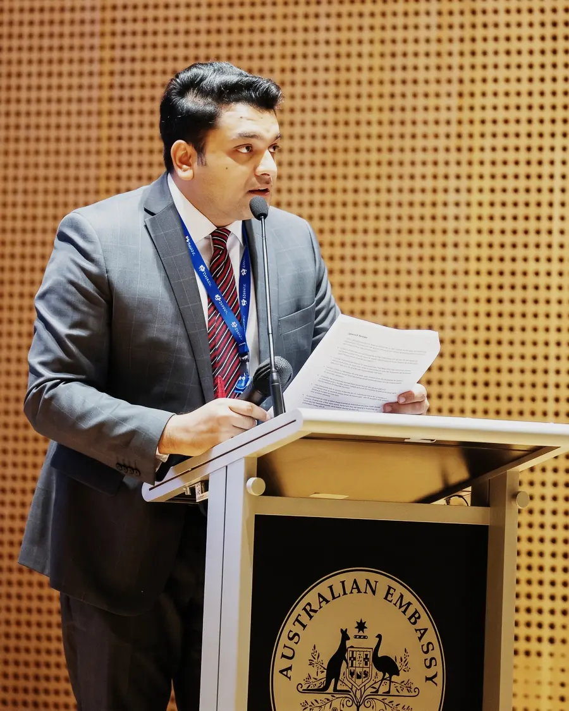
      <figcaption>Aqeeb Akram &mdash; speaking at the Australian Embassy</figcaption>
    </figure>
    <div>
      <p class="label fade">Who you are speaking to</p>
      <p class="who-name fade" style="--d:60ms">Aqeeb Akram</p>
      <p class="who-role fade" style="--d:110ms">Founder &amp; CEO, Ironbark Advisory</p>
      <h3 class="h-sub fade" style="--d:160ms">In the sector since 2014, with experience working in government, universities, and education agencies.</h3>
      <dl class="creds">
        <div class="cred fade" style="--d:220ms"><dt>Universities</dt><dd>Macquarie University and the Australian National University</dd></div>
        <div class="cred fade" style="--d:280ms"><dt>Government</dt><dd>Senior roles in NSW Government, Premier&rsquo;s Department</dd></div>
        <div class="cred fade" style="--d:340ms"><dt>Australia</dt><dd>Arrived as an international student in 2016</dd></div>
        <div class="cred fade" style="--d:400ms"><dt>Based</dt><dd>Dubai, United Arab Emirates</dd></div>
      </dl>
    </div>
  </div>
</section>

<!-- ══ CLOSE ══ -->
<section class="close" id="close" data-dark>
  
  <div class="wrap">
    <p class="label">Book</p>
    <h2 class="h-head"><span class="rev"><span>The first conversation</span></span><span class="rev"><span style="--d:120ms">costs nothing.</span></span></h2>
    <p class="lead fade" style="--d:380ms">Thirty minutes to work out whether Australia is the right answer for your family &mdash; or whether the UAE is the right next market for your institution.</p>
    <div class="close-row fade" style="--d:500ms">
      <a class="cta" href="https://calendar.app.google/Wr325oNEYvxfeW6F9" target="_blank" rel="noopener">Book a discovery call &rarr;</a>
      <a class="alt" href="https://www.linkedin.com/in/aqeebakram" target="_blank" rel="noopener">Connect on LinkedIn</a>
    </div>
  </div>
</section>
</main>

<footer data-dark>
  <div class="wrap">
    <div class="foot">
      <div class="foot-brand">
        <a class="brand" href="index.html">
          <svg viewBox="8.1 8.1 31.8 31.8" fill="none" aria-hidden="true">
      <g stroke="currentColor" stroke-width="3.8" stroke-linecap="round">
        <path d="M10 17.9V38"/><path d="M17 12.9V38"/><path d="M31 14.4V38"/><path d="M38 19.3V38"/>
      </g>
      <path d="M24 10V38" stroke="#E8A317" stroke-width="3.8" stroke-linecap="round"/>
    </svg><b>Ironbark</b><i>Advisory</i>
        </a>
        <p>Independent education advisory, based in the UAE.</p>
      </div>
      <div class="foot-cols">
        <div><h5>Site</h5><ul>
          <li><a href="about.html">About</a></li>
          <li><a href="why-australia.html">Why Australia</a></li>
          <li><a href="students-families.html">Students &amp; families</a></li>
          <li><a href="institutions.html">Institutions</a></li>
          <li><a href="insights.html">News</a></li>
          <li><a href="contact.html">Contact</a></li>
        </ul></div>
        <div><h5>Contact</h5><ul>
          <li><a href="mailto:hello@ironbarkadvisory.ae">hello@ironbarkadvisory.ae</a></li>
          <li><a href="https://calendar.app.google/Wr325oNEYvxfeW6F9" target="_blank" rel="noopener">Book a discovery call</a></li>
          <li><a href="https://www.linkedin.com/in/aqeebakram" target="_blank" rel="noopener">Connect on LinkedIn</a></li>
        </ul></div>
      </div>
    </div>
    <div class="colophon">
      <span>&copy; 2026 Ironbark Advisory &middot; Dubai, United Arab Emirates</span>
      <span>Independent. No provider commissions.</span>
    </div>
  </div>
</footer>

<script>
(() => {
  "use strict";
  const reduce=matchMedia("(prefers-reduced-motion: reduce)").matches;
  const clamp=(v,a=0,b=1)=>v<a?a:v>b?b:v, lerp=(a,b,t)=>a+(b-a)*t;
  const mast=document.getElementById("masthead");
  // ---- hero frames: crossfade every 4s, paused off-screen and in background tabs ----
  const slides=[...document.querySelectorAll(".hero .slide")];
  if(slides.length>1){
    let hi=0, timer=null, onScreen=true;
    const hero=document.querySelector(".hero");
    const mark=repaint=>{ hero.dataset.top=slides[hi].dataset.top||"light"; if(repaint) paint(); };
    const step=()=>{
      const prev=slides[hi];
      // the outgoing frame keeps drifting until it is fully faded out, or it snaps
      prev.classList.remove("on"); prev.classList.add("out");
      setTimeout(()=>prev.classList.remove("out"),1400);
      hi=(hi+1)%slides.length; slides[hi].classList.add("on"); mark(true);
    };
    mark(false);
    const run=()=>{ if(!timer && onScreen && !reduce && document.visibilityState==="visible") timer=setInterval(step,4000); };
    const halt=()=>{ clearInterval(timer); timer=null; };
    run();
    addEventListener("visibilitychange",()=>document.visibilityState==="visible"?run():halt());
    if("IntersectionObserver" in window){
      new IntersectionObserver(es=>{ onScreen=es[0].isIntersecting; onScreen?run():halt(); },{threshold:0})
        .observe(document.querySelector(".hero"));
    }
  }

  // ---- primary navigation drawer ----
  const burger=document.getElementById("burger");
  const closeNav=()=>{ mast.classList.remove("nav-open");
    burger.setAttribute("aria-expanded","false"); document.body.classList.remove("nav-lock"); };
  burger.addEventListener("click",()=>{
    const open=!mast.classList.contains("nav-open");
    mast.classList.toggle("nav-open",open);
    burger.setAttribute("aria-expanded",String(open));
    document.body.classList.toggle("nav-lock",open);
  });
  document.querySelectorAll("#mast-nav a").forEach(a=>a.addEventListener("click",closeNav));
  addEventListener("keydown",e=>{ if(e.key==="Escape") closeNav(); });
  // widening past the breakpoint must not leave the page scroll-locked
  matchMedia("(min-width:1151px)").addEventListener("change",e=>{ if(e.matches) closeNav(); });

  const par=[...document.querySelectorAll("[data-par]")];
  const darkZones=[...document.querySelectorAll("[data-dark]")];
  const railMQ=matchMedia("(min-width: 901px)");
  const pinned=()=>railMQ.matches && !reduce;

  // both rails share one implementation
  const RAILS=[...document.querySelectorAll("[data-rail]")].map(rail=>{
    const key=rail.dataset.rail;
    return {key, rail,
      sec:rail.closest(".rail-sec"),
      bar:document.querySelector(`[data-bar="${key}"]`),
      name:document.querySelector(`[data-name="${key}"]`),
      cards:[...rail.children],
      names:[...rail.children].map(c=>(c.querySelector("h3")||{}).textContent||""),
      top:0, span:1, over:0};
  });

  let sy=scrollY, target=sy, last=0, running=false, lastW=window.innerWidth;

  function layout(){
    RAILS.forEach(r=>{
      if(!pinned()){ r.sec.style.height="auto"; r.rail.style.transform=""; r.cards.forEach(c=>c.classList.remove("near")); return; }
      r.rail.style.transform="translate3d(0,0,0)";
      // scrollWidth omits a flex container's TRAILING padding, so the rail was
      // short by one gutter and the last card came to rest 24px from the edge
      // while the first one starts a full gutter in. Add the padding back and
      // drop the old +24 fudge, and both ends sit on the same gutter.
      const padR=parseFloat(getComputedStyle(r.rail).paddingRight)||0;
      r.over=Math.max(0, r.rail.scrollWidth + padR - window.innerWidth);
      // the fill is translated by (n-1)x its own width, so it has to BE 1/n wide.
      // Without a width it is zero, and the progress bar never moves at all.
      if(r.bar) r.bar.style.width=(100/Math.max(1,r.cards.length))+"%";
      r.sec.style.height=(window.innerHeight + Math.max(r.over,320)*1.45)+"px";
    });
  }
  function measure(){
    RAILS.forEach(r=>{
      const b=r.sec.getBoundingClientRect();
      r.top=b.top+scrollY; r.span=Math.max(1,b.height-window.innerHeight);
    });
  }
  function paint(){
    mast.classList.toggle("docked", sy>Math.min(110,window.innerHeight*.16));
    const hh=mast.offsetHeight||64;
    // a hero frame that is dark along its top inverts the bar the same way a dark section does
    const heroTop=(()=>{ const h=document.querySelector(".hero");
      if(!h||h.dataset.top!=="dark") return false;
      const b=h.getBoundingClientRect(); return b.top<hh*.55 && b.bottom>hh*.55; })();
    mast.classList.toggle("on-dark", heroTop || darkZones.some(el=>{
      const b=el.getBoundingClientRect(); return b.top<hh*.55 && b.bottom>0; }));
    if(!reduce) par.forEach(img=>{
      const s=img.closest("section"); if(!s) return;
      const b=s.getBoundingClientRect();
      if(b.bottom<-200||b.top>window.innerHeight+200) return;
      const mid=(b.top+b.height/2-window.innerHeight/2)/window.innerHeight;
      img.style.transform=`translate3d(0,${(-mid*parseFloat(img.dataset.par)*100).toFixed(2)}px,0)`;
    });
    if(!pinned()) return;
    RAILS.forEach(r=>{
      // scrollY, NOT the damped sy. Damping is right for the masthead and the
      // parallax, where a little lag reads as weight, and wrong here: a pinned
      // rail is the user dragging the cards sideways with their scroll, so any
      // lag reads as the cards sliding around behind the input. Measured, the
      // rail was still 73px short of its travel at the moment the pin released.
      const p=clamp((scrollY-r.top)/r.span);
      r.rail.style.transform=`translate3d(${-r.over*p}px,0,0)`;
      const n=r.cards.length;
      if(r.bar) r.bar.style.transform=`translateX(${p*(n-1)*100}%)`;
      const i=clamp(Math.round(p*(n-1)),0,n-1);
      r.cards.forEach((c,k)=>c.classList.toggle("near",k===i));
      if(r.name) r.name.textContent=r.names[i].trim();
    });
  }
  function frame(now){
    last=now||performance.now();
    // a debounced resize can be missed or fire against a stale viewport; if the
    // width has moved, the rails' cached overflow is wrong and a card gets clipped
    if(window.innerWidth!==lastW){ lastW=window.innerWidth; layout(); measure(); }
    target=scrollY; sy=reduce?target:lerp(sy,target,.12);
    if(Math.abs(target-sy)<.08) sy=target;
    paint(); requestAnimationFrame(frame);
  }
  addEventListener("scroll",()=>{ if(performance.now()-last<120) return; sy=target=scrollY; paint(); },{passive:true});
  addEventListener("visibilitychange",()=>{ if(document.visibilityState==="visible"){ sy=target=scrollY; paint(); sweep(); }});

  const watched=[...document.querySelectorAll(".rev,.fade,.claim,.stage,.cred,.card,.city")];
  const io=new IntersectionObserver((es,o)=>es.forEach(e=>{
    if(e.isIntersecting){ e.target.classList.add("in"); o.unobserve(e.target); }}),
    {rootMargin:"0px 0px -8% 0px",threshold:.1});
  watched.forEach(el=>io.observe(el));
  // Anything that sizes itself in JS moves everything below it AFTER measure()
  // has already cached the rails' positions. The Students arc sets #arc to
  // innerHeight*3.2 late, which pushed the process rail down by ~1980px: on
  // reaching it, p computed as 1.25, clamped to 1, and the rail opened on the
  // LAST card instead of the first. Re-measure whenever the page's height
  // actually changes. Only measure() is called here, never layout(), because
  // layout() writes heights and would feed itself.
  if("ResizeObserver" in window){
    let queued=false;
    new ResizeObserver(()=>{
      if(queued) return; queued=true;
      requestAnimationFrame(()=>{ queued=false; measure(); });
    }).observe(document.body);
  }
  addEventListener("load",()=>{ layout(); measure(); });

  requestAnimationFrame(()=>document.getElementById("hero").classList.add("in"));
  function sweep(){ watched.forEach(el=>{ if(el.classList.contains("in")) return;
    const b=el.getBoundingClientRect();
    if(b.bottom>0&&b.top<window.innerHeight) el.classList.add("in"); }); }
  setTimeout(sweep,2500);

  function boot(){ layout(); measure(); paint();
    if(!running){ running=true; requestAnimationFrame(frame); } }
  let rt; addEventListener("resize",()=>{ if(innerWidth>1150) closeNav();
    clearTimeout(rt);rt=setTimeout(()=>{layout();measure();paint();},150);});
  addEventListener("load",()=>setTimeout(boot,40));
  if(document.readyState==="complete") setTimeout(boot,40);
  else document.addEventListener("DOMContentLoaded",()=>setTimeout(boot,20));
  if(document.fonts&&document.fonts.ready) document.fonts.ready.then(()=>setTimeout(()=>{layout();measure();},60));
})();
</script>
